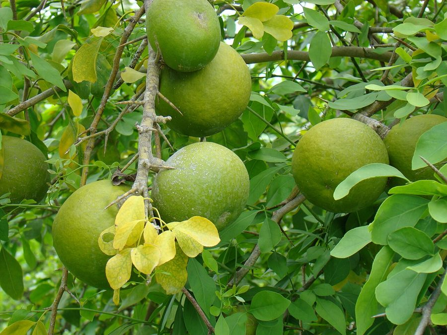

बेलBael
Aegle marmelos · Rutaceae · FLR-0031

- Scientific name
- Aegle marmelos (L.) Corrêa
- Family
- Rutaceae
- Hindi
- बेल
- Status here
- native
- IUCN
- not evaluated
When to look कब देखें
Present all year.
बेल / Bael
Aegle marmelos (L.) Corrêa — Rutaceae
बेल — हिंदू आस्था में भगवान शिव का प्रिय निवास माना जाने वाला और आयुर्वेदिक चिकित्सा में 'अमृत फल' के रूप में पूजा जाने वाला एक अत्यंत महत्वपूर्ण काँटेदार पेड़। इसकी तीन पत्रकों वाली संयुक्त पत्तियाँ (बिल्वपत्र) शिव-पूजा में चढ़ाई जाती हैं। गर्मियों में इस पेड़ पर लगने वाले गोल, पत्थर जैसे कठोर कवच वाले फलों का मीठा और सुगंधित गूदा पेट को ठंडक देने वाले प्रसिद्ध बेल-शरबत का स्रोत है। यह पेड़ न केवल ग्रामीण परिवेश का प्राकृतिक औषधालय है, बल्कि लाइम बटरफ्लाई जैसी तितलियों का भी मुख्य आश्रयदाता है।
Quick Identification त्वरित पहचान
| Feature | Description |
|---|---|
| Leaves | Alternate, compound, trifoliate (composed of 3 leaflets); aromatic with a citrusy smell when crushed |
| Thorns | Sharp, straight, single or paired spines (1–4 cm long) located in the leaf axils along the branches |
| Fruit | Large, globose or oval (5–18 cm diameter) with a rock-hard, smooth woody shell; ripening from green to pale yellow-brown |
| Flowers | Greenish-white or pale cream-colored, 4–5 petalled (1.5–2 cm across), forming sweet-scented clusters |
| Bark | Greyish-brown, rough, corky, and shallowly furrowed on mature trunks |
Field tip: Look for a small to medium-sized thorny tree with leaves split into three leaflets. When crushed, the leaves release a strong, clean citrus scent. The presence of large, round, hard woody fruits hanging from the branches is a definitive field mark.
Morphology आकारिकी
Biometrics (typical measurements in the Gangetic plain):
| Feature | Measurement |
|---|---|
| Plant height | 8–15 m |
| Leaflet length | 4–12 cm |
| Leaflet width | 2–6 cm |
| Flower diameter | 1.5–2.0 cm |
| Fruit dimensions | 5–18 cm |
Habit: A small to medium deciduous tree, growing up to 8–15 metres tall with a somewhat open, irregular crown. Branches are armed with sharp, straight, axillary spines.
Leaves: Alternate, compound trifoliate (rarely 5-foliate). Leaflets are ovate to elliptic-lanceolate, 4–12 cm long and 2–6 cm wide. The terminal leaflet is the largest with a longer leaf stalk (petiolule). The leaf margins are finely scalloped (crenulate). The surface contains glands that release aromatic essential oils when crushed.
Flowers: Sweetly scented, greenish-white or pale cream, about 1.5–2 cm in diameter. They are arranged in short, simple branched clusters (panicles) in the leaf axils.
Fruit: A large globose or subglobose berry, 5–18 cm in diameter, enclosed in a hard, woody, shell-like outer rind. The interior is packed with a sweet, highly aromatic, orange-yellow mucilaginous pulp containing 10–20 flat, hairy, oblong seeds.
Ecological Role पारिस्थितिक भूमिका
Butterfly host. Aegle marmelos is a primary larval host plant for several swallowtail butterfly species, including the Lime Butterfly (Papilio demoleus, INS-0004) and the Common Mormon (Papilio polytes). The caterpillars feed on the tender young leaves.
Pollinator supporter. The sweetly fragrant cream flowers bloom in early summer, attracting huge numbers of honeybees (Apis cerana, Apis dorsata), hoverflies, and butterflies for nectar.
Wildlife food. Ripe fallen fruits are cracked open and consumed by wild boars, jackals, and common langurs.
Life Cycle / Phenology जीवन चक्र
- Leaf fall: Deciduous tree. Sheds its leaves in the late dry season (April–May) to conserve moisture.
- Flushing and flowering: New leaves flush alongside the fragrant cream flowers in May–June.
- Fruiting: Fruits develop slowly, taking a full 10 to 11 months to mature. They ripen during March–May of the following year.
Host Plants or Prey आहार
Associated organisms:
- Larvae of the Lime Butterfly (Papilio demoleus) consume the foliage.
- Parasitic mistletoes occasionally grow on the older branches.
Predators / Natural Enemies शत्रु
- Scale Insects — feed on the sap of young twigs, causing die-back.
- Porcupines and Rodents — chew the bark of young tree trunks.
- Fungal Rot — heart-rot fungi can weaken older trunks in waterlogged soils.
Agricultural / Human Relevance कृषि प्रासंगिकता
Summer cooling beverage. The sweet orange pulp of the ripe fruit is scooped out, blended with water and sugar, and strained to make Bel ka Sharbat (बेल का शरबत). It is widely consumed across eastern UP during May and June as a natural remedy to cool the digestive system and protect against heatstroke (loo).
Ayurvedic medicine. Every part of the tree has medicinal value:
- Unripe fruit: Astringent, dried and sliced to treat chronic diarrhea and dysentery.
- Ripe fruit: Acts as a mild, cooling laxative and digestive tonic.
- Leaves: Decoctions are used to manage blood sugar levels and inflammation.
Religious and cultural significance. The Bael tree is deeply sacred in Hindu tradition. It is considered the earthly form of Lord Shiva. The trifoliate leaf (Bilva patra) represents Shiva’s three eyes or his trident (Trishul). The leaves are an essential offering in Shiva temples, especially during Mahashivratri and the holy month of Shravan. The tree is also called Sriphal (the fruit of prosperity/Lakshmi).
Expected Locally स्थानीय रूप से अपेक्षित
Not a field record. Written from published accounts for eastern Uttar Pradesh. No confirmed local sighting yet — if you have seen it, that is what the atlas needs.
अभी तक स्थानीय पुष्टि नहीं। यह विवरण प्रकाशित स्रोतों से है, किसी अवलोकन से नहीं।
Commonly grown in the courtyards of rural homes and adjacent to village temples throughout Basti district. Collecting fresh three-leaflet leaves early in the morning for temple prayers is a standard ritual. During early summer, vendors selling fresh, cool Bel juice can be seen at almost every major market crossing in Basti.
Distribution वितरण
Global range: Native to the dry deciduous forests of India, Nepal, Bangladesh, Sri Lanka, and Myanmar; cultivated widely across Thailand, Vietnam, and Indonesia.
In India: Found wild in dry hilly forests and plains across central and northern India, up to 1,200 metres in the Himalayan foothills; extensively planted in homesteads and temples.
In Uttar Pradesh: Common state-wide, both as wild forest remnants and as a cultivated horticultural tree.
In Basti district / eastern UP: Ubiquitous in rural settlements, temple grounds, and agricultural borders.
Range notes: No significant range changes documented.
Research Questions शोध प्रश्न
Anyone can investigate these | कोई भी इन प्रश्नों की जाँच कर सकता है
- How many Lime Butterfly caterpillars can you find on a young Bel tree in your garden during the monsoon? / मानसून के दौरान अपने बगीचे के एक छोटे बेल के पेड़ पर आप नींबू तितली के कितने कैटरपिलर पा सकते हैं? — Conduct weekly counts of eggs and larvae from July to September.
- At what temperature threshold does the Bel tree drop all its leaves in your village? / आपके गाँव में बेल का पेड़ किस तापमान सीमा पर अपने सारे पत्ते गिरा देता है? — Record the leaf-drop phase alongside local daily temperature readings in spring.
- What is the average fruit weight and diameter of Bel trees in Basti orchards compared to wild trees? — Measure and compare 10 cultivated fruits vs. 10 wild fruits.
- Do temple priests observe any local decline in Bel leaf availability due to heavy daily harvesting? / क्या मंदिर के पुजारी दैनिक भारी कटाई के कारण बेल के पत्तों की उपलब्धता में स्थानीय कमी महसूस करते हैं? — Interview priests at five local temples.
- How long does it take for a Bael seed to germinate in different soil mixtures? — Run a seed germination experiment using garden soil, compost, and river sand.
Similar Species मिलती-जुलती प्रजातियाँ
| Species | How to tell apart | हिंदी |
|---|---|---|
| Wood Apple (Limonia acidissima) | Leaves have 5–7 small leaflets on a winged stalk; fruit is smaller with a rough, grey scurfy shell and highly acidic pulp | कैथा — बहु-पत्रीय पत्ते, खट्टा फल |
| Elephant Apple (Dillenia indica) | Large simple leaves with prominent parallel ribs; large white flowers; grows near streams | चलता — बड़ी पत्तियां, जंगली फल |
| Lemon Tree (Citrus limon) | Simple leaves with winged stalks; smaller soft-peeled acid fruits; smaller tree | नींबू — एक-पत्रीय पत्ता, खट्टा रस |
Field rule: Compound leaves with exactly three leaflets, sharp axillary thorns, and a large round woody-shelled fruit containing sweet orange-yellow pulp identify Aegle marmelos.
Taxonomy & Classification वर्गीकरण
Original description. Carl Linnaeus described the Bael tree as Crateva marmelos in 1753 in his seminal work Species Plantarum (Vol. 1, p. 444). The Portuguese naturalist and administrator José Correia da Serra transferred it to the genus Aegle in 1800 in Transactions of the Linnean Society of London (Vol. 5, p. 223). The type locality is India. The genus name Aegle comes from the Greek Aigle, one of the Hesperides. The specific epithet marmelos comes from Portuguese marmelo (quince).
Subspecies. Monotypic — no subspecies are currently recognised.
Family and order placement. Placed in the order Sapindales, family Rutaceae (citrus family), subfamily Aurantioideae. Rutaceae is characterized by pellucid glands in leaves containing volatile aromatic oils.
Phylogenetic notes. Aegle is a monotypic genus containing only Aegle marmelos. It represents an early divergent lineage of woody, hard-shelled citrus relatives, closely aligned with Limonia.
IUCN status rationale. Not formally assessed by the IUCN Red List (Not Evaluated). However, the tree is highly abundant, widely planted, and culturally protected across India, facing no conservation risks.
Photo Gallery फोटो गैलरी
References संदर्भ
- Linnaeus, C. (1753). Species Plantarum. Vol. 1. Laurentii Salvii, Holmiae, p. 444.
- Correia da Serra, J. (1800). On the Dicotyledonous Genera of the Citrus Family. Transactions of the Linnean Society of London, 5, 218–228.
- Brandis, D. (1906). Indian Trees. Archibald Constable & Co., London.
- Maity, P., Hansda, D., Bandyopadhyay, U. & Mishra, D.K. (2009). Biological activities of Aegle marmelos (L.) Correa (Bael): A review. Phytotherapy Research, 23(12), 1639–1658.
- Botanical Survey of India — Flora of Uttar Pradesh.
- GBIF Occurrence Data — Aegle marmelos, Uttar Pradesh (2010–2025).
Source file: species/flora/trees/bel.md